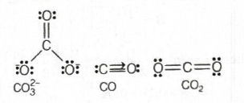
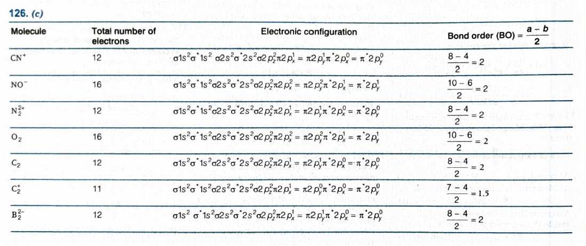
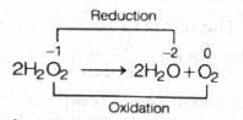
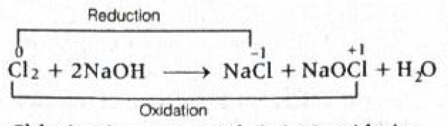
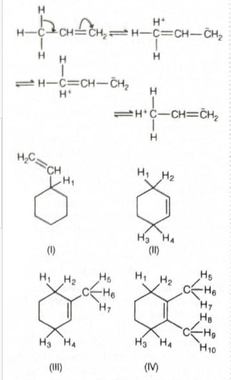
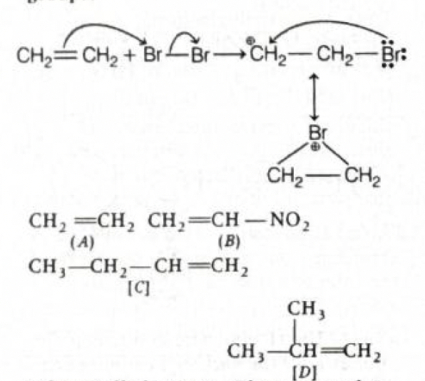
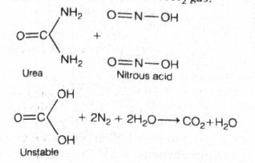

Explanation: To excite an electron in hydrogen from the 2nd
orbit to the 3rd orbit, we calculate the energy difference
between the two energy levels. Using the hydrogen energy-level
formula, the required energy comes out to \(1.89\ \text{eV}\),
which is approximately \(1.9\ \text{eV}\).
Step-by-step explanation:
For hydrogen atom, the energy of the \(n^{th}\) orbit is:
In the hydrogen atom, electrons occupy fixed energy levels.
The energy values are negative because the electron is bound
to the nucleus.
When an electron goes from a lower orbit to a higher orbit,
energy must be supplied.
That supplied energy is simply the difference between the
two energy levels.
The word minimum here means exactly the
energy gap between those two orbits, not more.
Why the correct option is right:
Only option (c) matches the calculated value \(1.89\
\text{eV}\).
Rounded off, this becomes \(1.9\ \text{eV}\).
Why other options are wrong or less suitable:
(a) 2.2 eV is larger than the actual gap.
(b) 2.7 eV is also incorrect for the \(n=2\) to \(n=3\)
transition.
(d) 7 eV is far too large and does not correspond to this
excitation.
Exam tip / shortcut / elimination clue:
For hydrogen atom questions, always remember:
\(E_n = \dfrac{-13.6}{n^2}\ \text{eV}\)
For excitation:
\(\Delta E = E_{\text{higher}} - E_{\text{lower}}\)
Since both values are negative, the answer finally comes out
positive.
A quick mental estimate:
\(-1.5 - (-3.4) \approx 1.9\)
Final result:
The minimum energy required to excite the electron from 2nd
orbit to 3rd orbit is \(1.9\ \text{eV}\).
Therefore, the correct answer is (c).
Chapter / topic / subtopic:
Chapter: Structure of Atom
Topic: Bohr model of hydrogen atom
Subtopic: Energy of electronic transitions
Correct answer: (c) \(\dfrac{h\nu}{mC}\)
Explanation: Using the de-Broglie relation and the relation
between wavelength and frequency, we can derive the particle
velocity. From \(\lambda = \dfrac{h}{mv}\) and \(\lambda =
\dfrac{C}{\nu}\), we get \(v = \dfrac{h\nu}{mC}\).
Step-by-step explanation:
The de-Broglie wavelength is:
\(\lambda = \dfrac{h}{mv}\)
For a wave, wavelength and frequency are related by:
\(\lambda = \dfrac{C}{\nu}\)
Now substitute \(\lambda = \dfrac{C}{\nu}\) into the
de-Broglie equation:
\(mv = \dfrac{h}{\lambda}\)
\(mv = \dfrac{h}{C/\nu}\)
Simplify:
\(mv = \dfrac{h\nu}{C}\)
Now divide both sides by \(m\):
\(v = \dfrac{h\nu}{mC}\)
Concept used / theory behind it:
de-Broglie proposed that a moving particle has wave nature.
Its wavelength is inversely proportional to momentum:
\(\lambda = \dfrac{h}{p} = \dfrac{h}{mv}\)
Also, wave speed relation is:
\(\lambda \nu = C\)
Combining these standard relations gives the required
formula.
This is a formula-based direct application question from
wave-particle duality.
Why the correct option is right:
Only option (c) matches the correctly derived expression:
\(v = \dfrac{h\nu}{mC}\)
Why other options are wrong or less suitable:
(a) \(mC^2\) is dimensionally energy-like, not velocity.
(b) \(v\lambda\) does not represent the required expression
for particle velocity here.
(d) \(\dfrac{C^2}{v}\) is not obtained from de-Broglie
relation.
Exam tip / shortcut / elimination clue:
Memorise the two standard formulas:
\(\lambda = \dfrac{h}{mv}\)
\(\lambda = \dfrac{C}{\nu}\)
Whenever both \(\nu\) and \(C\) appear in the options,
combine these two relations immediately.
A quick dimensional check also helps eliminate clearly wrong
options.
Final result:
The velocity of de-Broglie wave is
\(\dfrac{h\nu}{mC}\).
Therefore, the correct answer is (c).
Chapter / topic / subtopic:
Chapter: Structure of Atom
Topic: de-Broglie theory
Subtopic: Relation between wavelength, frequency and
particle velocity
Correct answer: (c) 4
Explanation: All four statements are correct according to
standard periodic and general chemistry facts. So the number of
correct statements is 4.
Step-by-step explanation:
Statement (A): ‘He’ is the second most
abundant element in the universe.
This is correct.
Hydrogen is the most abundant element in the universe.
Helium comes next.
Statement (B): The symbol for the element
with atomic number 110 is Ds.
This is correct.
Atomic number 110 corresponds to
Darmstadtium.
Its symbol is Ds.
Statement (C): Osmium has the highest
density among all elements.
This is taken as correct in standard exam chemistry.
Osmium is one of the densest elements and is commonly
stated as the element with highest density.
Statement (D): Francium is the most
electropositive element in the periodic table.
This is also correct in the usual periodic trend
treatment.
Electropositive character increases down Group 1.
So francium is considered the most electropositive
element.
Concept used / theory behind it:
This is a direct fact-based question from periodic table and
general chemistry knowledge.
Such questions often mix:
cosmic abundance,
element symbols,
physical properties like density,
and periodic trends like electropositivity.
No calculation is needed here. The key is accurate recall of
standard chemistry facts.
Why the correct option is right:
Since A, B, C and D are all correct, total number of correct
statements is:
4
Hence option (c) is correct.
Why other options are wrong or less suitable:
(a) 3 would mean one statement is false, but here all four
are correct.
(b) 2 is too small.
(d) 1 is clearly incorrect because multiple statements are
correct.
Exam tip / shortcut / elimination clue:
Keep a short memory list of standard one-line facts:
Hydrogen: most abundant in universe
Helium: second most abundant
Ds: atomic number 110
Osmium: highest density
Francium: most electropositive
These direct-fact MCQs are quick marks if revised properly.
Final result:
All four statements are correct.
Therefore, the number of correct statements is
4.
Hence, the correct answer is (c).
Chapter / topic / subtopic:
Chapter: Classification of Elements and Periodicity in
Properties
Topic: General periodic facts and properties of elements
Subtopic: Symbols, abundance, density and electropositive
character
Correct answer: (a) Li < B < Be < N
Explanation: First ionisation enthalpy generally increases
across the second period from left to right, but there is an
important exception between Be and B. Beryllium has a filled
\(2s\) subshell, so its first ionisation enthalpy is greater
than that of boron. Therefore, the correct increasing order is
Li < B < Be < N.
Step-by-step explanation:
Write the electronic configurations first:
\(Li = 1s^2 2s^1\)
\(Be = 1s^2 2s^2\)
\(B = 1s^2 2s^2 2p^1\)
\(N = 1s^2 2s^2 2p^3\)
All these elements belong to the second period.
In general, ionisation enthalpy increases from left to right
because effective nuclear charge increases.
So a rough expectation is:
\(Li < Be < B < N\)
But now notice the important exception between Be and B:
In Be, the electron removed is from \(2s\), and \(2s\)
is relatively more penetrating and more strongly held.
In B, the electron removed is from \(2p\), and \(2p\) is
higher in energy and less tightly held than \(2s\).
Therefore, it is easier to remove an electron from B than
from Be.
So:
\(IE_1(B) < IE_1(Be)\)
Nitrogen has half-filled \(2p^3\) configuration, which gives
extra stability.
So nitrogen has the highest first ionisation enthalpy among
these four.
Hence the final order is:
\(Li < B < Be < N\)
Concept used / theory behind it:
Ionisation enthalpy is the energy required to remove the
most loosely bound electron from an isolated gaseous atom.
Across a period, ionisation enthalpy generally increases
because:
atomic size decreases,
nuclear attraction increases.
However, exceptions occur due to:
subshell energies,
extra stability of filled or half-filled configurations.
That is why:
\(Be > B\)
and \(N\) is especially stable because of half-filled
\(2p^3\).
Why the correct option is right:
Option (a) exactly matches the correct order:
\(Li < B < Be < N\)
It correctly accounts for the Be-B exception.
Why other options are wrong or less suitable:
(b) is wrong because it places Be below B, ignoring the
\(2s\) versus \(2p\) exception.
(c) and (d) are completely opposite to the expected periodic
trend and are incorrect.
Exam tip / shortcut / elimination clue:
For second-period first ionisation enthalpy, always remember
the two famous exceptions:
\(Be > B\)
\(N > O\)
If you remember just these two exceptions, many periodicity
MCQs become easy.
Final result:
The correct order of first ionisation enthalpies is
Li < B < Be < N.
Therefore, the correct answer is (a).
Chapter / topic / subtopic:
Chapter: Classification of Elements and Periodicity in
Properties
Topic: Ionisation enthalpy
Subtopic: Periodic trend and exceptions in second period
Correct answer: (d) \(CO < CO_2 < CO_3^{2-}\)
Explanation: Bond length is inversely related to bond order. So
first we compare the bond orders of the C—O bonds in \(CO\),
\(CO_2\), and \(CO_3^{2-}\). The bond order is highest in
\(CO\), then in \(CO_2\), and lowest in \(CO_3^{2-}\).
Therefore, bond length follows the reverse order: \(CO < CO_2
< CO_3^{2-}\).

Step-by-step explanation:
To compare bond lengths, the quickest method is to compare
bond order.
The rule is:
higher bond order \(\Rightarrow\) shorter bond
length
lower bond order \(\Rightarrow\) longer bond
length
Now consider each species one by one.
1. \(CO\)
In carbon monoxide, the C—O bond is essentially a triple
bond.
So its bond order is:
\(3\)
Since bond order is highest, bond length will be the
smallest.
2. \(CO_2\)
In carbon dioxide, each C=O bond is a double bond.
So bond order of each C—O bond is:
\(2\)
This is less than in \(CO\), so bond length is slightly
larger than in \(CO\).
3. \(CO_3^{2-}\)
In carbonate ion, resonance makes all three C—O bonds
equivalent.
There is one double bond and two single bonds in the
resonance forms, spread equally over three bonds.
So average bond order is:
\(\dfrac{2+1+1}{3} = \dfrac{4}{3} = 1.33\)
This is the smallest bond order among the three cases,
so carbonate has the longest C—O bond.
Therefore, bond order sequence is:
\(CO(3) > CO_2(2) > CO_3^{2-}(1.33)\)
Hence bond length sequence is the reverse:
\(CO < CO_2 < CO_3^{2-}\)
Concept used / theory behind it:
Bond length and bond order are closely related.
When bond order increases, electron density between the two
atoms increases.
This pulls the atoms closer together, making the bond
shorter and stronger.
Resonance lowers or fractionalises bond order in species
like \(CO_3^{2-}\), so all bonds become equivalent with
intermediate character.
This is a classic bonding-and-structure question from
chemical bonding.
Why the correct option is right:
\(CO\) has the highest bond order, so it has the shortest
bond.
\(CO_2\) has double bond character, so its bond length is
intermediate.
\(CO_3^{2-}\) has resonance-stabilised bonds of bond order
\(1.33\), so its bonds are longest.
Thus the correct order is:
\(CO < CO_2 < CO_3^{2-}\)
Why other options are wrong or less suitable:
Any option that puts \(CO\) as the longest bond is
immediately wrong, because triple bonds are the shortest
among these.
Any option that places \(CO_3^{2-}\) before \(CO_2\) is also
wrong, because bond order in carbonate is lower than in
carbon dioxide.
Exam tip / shortcut / elimination clue:
For quick objective solving, use:
triple bond < double bond < resonance bond of
lower average order
Also remember:
\(CO\): bond order \(3\)
\(CO_2\): bond order \(2\)
\(CO_3^{2-}\): bond order \(1.33\)
Then reverse the order to get bond lengths.
Final result:
The correct order of C—O bond length is
\(CO < CO_2 < CO_3^{2-}\).
Therefore, the correct answer is (d).
Chapter / topic / subtopic:
Chapter: Chemical Bonding and Molecular Structure
Topic: Bond order, resonance and bond length
Subtopic: Comparison of C—O bond lengths in different
species
Correct answer: (c) 6
Explanation: We check the bond order of each species using
molecular orbital theory. Among the seven given species, all
except \(C_2^+\) have bond order 2. Therefore, a total of 6
species have bond order 2.

Step-by-step explanation:
Use the bond order formula:
\(\text{Bond order} = \dfrac{N_b - N_a}{2}\)
Here:
\(N_b\) = number of bonding electrons
\(N_a\) = number of antibonding electrons
Now examine each species.
1. \(C_2\)
Total electrons = 12
For \(B_2\), \(C_2\), \(N_2\)-type ordering, the MO
sequence gives bond order \(=2\).
2. \(B_2^{2-}\)
\(B_2\) has 10 electrons, so \(B_2^{2-}\) has 12
electrons.
That makes it isoelectronic with \(C_2\).
So bond order \(=2\).
3. \(N_2^{2+}\)
\(N_2\) has 14 electrons, so \(N_2^{2+}\) has 12
electrons.
Again isoelectronic with \(C_2\).
So bond order \(=2\).
4. \(CN^+\)
\(C\) contributes 6 electrons and \(N\) contributes 7,
total \(=13\).
Because of the positive charge, total electrons \(=12\).
So this is also isoelectronic with \(C_2\).
Hence bond order \(=2\).
5. \(NO^-\)
\(N = 7\), \(O = 8\), total \(=15\).
Negative charge adds one electron, so total \(=16\).
This becomes isoelectronic with \(O_2\).
\(O_2\) has bond order \(2\), so \(NO^-\) also has bond
order \(2\).
6. \(O_2\)
Standard bond order of oxygen molecule is:
\(2\)
7. \(C_2^+\)
\(C_2\) has 12 electrons, so \(C_2^+\) has 11 electrons.
Removing one electron from a bonding MO reduces the bond
order by \(0.5\).
So bond order becomes:
\(1.5\)
Thus the species with bond order 2 are:
\(C_2\)
\(B_2^{2-}\)
\(N_2^{2+}\)
\(CN^+\)
\(NO^-\)
\(O_2\)
Total number \(= 6\).
Concept used / theory behind it:
This is a molecular orbital theory question.
Many such questions become easy by using the idea of
isoelectronic species.
If two species have the same total number of electrons and
similar MO filling pattern, they often have the same bond
order.
That is why identifying 12-electron and 16-electron species
helps solve this quickly.
Why the correct option is right:
Six species have bond order exactly 2.
Only \(C_2^+\) differs, having bond order \(1.5\).
So the correct count is 6.
Why other options are wrong or less suitable:
Options 3, 4, and 5 underestimate the number of species with
bond order 2.
The main trap is forgetting that \(B_2^{2-}\), \(N_2^{2+}\),
and \(CN^+\) are all 12-electron species.
Exam tip / shortcut / elimination clue:
For fast solving, group them by electron count:
12-electron species \(\rightarrow\) often like \(C_2\)
16-electron species \(\rightarrow\) often like \(O_2\)
Also remember:
\(C_2\) bond order \(=2\)
\(O_2\) bond order \(=2\)
Removing one bonding electron lowers bond order by
\(0.5\)
Final result:
The number of species having bond order 2 is
6.
Therefore, the correct answer is (c).
Chapter / topic / subtopic:
Chapter: Chemical Bonding and Molecular Structure
Topic: Molecular orbital theory
Subtopic: Bond order of homonuclear and heteronuclear
diatomic species
Correct answer: (a) attract each other
Explanation: Ideal gas behaviour assumes that gas molecules do
not exert intermolecular forces on one another. At high
pressure, molecules come much closer together, so intermolecular
attractions become significant. Because of this attraction, real
gases deviate from ideal behaviour.
Step-by-step explanation:
In the ideal gas model, two major simplifications are made:
gas particles have negligible volume,
gas particles do not attract or repel each other.
At high pressure, the gas is compressed strongly.
So the molecules come much closer to one another.
When particles are closer, intermolecular forces can no
longer be ignored.
Among these forces, attractive forces become important and
cause deviation from ideal behaviour.
That is why the real gas no longer follows the ideal gas
equation exactly.
Concept used / theory behind it:
Real gases differ from ideal gases mainly because:
molecules have finite volume,
molecules experience intermolecular forces.
At high pressure, closeness of molecules makes these
non-ideal effects more noticeable.
At low temperature also, attractive forces become more
important and deviation increases.
This is the reason van der Waals corrections are needed for
real gases.
Why the correct option is right:
Option (a) correctly points to intermolecular attraction,
which is ignored in ideal gas theory but becomes important
at high pressure.
Why other options are wrong or less suitable:
(b) Repulsion is not the standard reason asked in this
school-level concept question.
(c) Brownian motion is unrelated to ideal gas deviation
here.
(d) Tyndall effect belongs to colloids, not gases in this
context.
Exam tip / shortcut / elimination clue:
Remember this standard rule:
High pressure + low temperature \(\Rightarrow\) more
deviation from ideal behaviour
The usual reason asked in MCQs is:
intermolecular attraction becomes significant
Tyndall effect and Brownian motion are easy elimination
options here.
Final result:
Gases deviate from ideal behaviour at high pressure because
gas molecules attract each other.
Therefore, the correct answer is (a).
Chapter / topic / subtopic:
Chapter: States of Matter
Topic: Ideal and real gases
Subtopic: Causes of deviation from ideal behaviour
Correct answer: (c) A and D only
Explanation: According to kinetic molecular theory, gas
particles occupy negligible volume compared to the empty space
between them, and gas pressure is due to collisions of particles
with the container walls. However, collisions are assumed to be
perfectly elastic, not inelastic, and different gas particles do
not all have the same speed at a given instant. So only A and D
are correct.
Step-by-step explanation:
Statement (A): The actual volume of the
molecules is negligible in comparison to the empty space
between them.
This is correct.
Kinetic theory assumes that most of the volume occupied
by a gas is empty space.
Statement (B): Collisions of gas molecules
are inelastic.
This is incorrect.
Kinetic theory assumes that collisions are
perfectly elastic.
That means there is no net loss of kinetic energy during
collisions.
Statement (C): At any particular time,
different particles in the gas have same speed and same
kinetic energies.
This is incorrect.
Different gas molecules have a distribution of speeds.
They do not all move with the same speed at the same
instant.
Statement (D): Pressure is exerted by the
gas as a result of collision of the particles with the walls
of the container.
This is correct.
Gas pressure arises because molecules continuously hit
the walls of the container.
Concept used / theory behind it:
The kinetic molecular theory of gases is built on a few
standard assumptions:
particles are very small,
most of the gas volume is empty space,
collisions are perfectly elastic,
particles move randomly,
pressure is due to wall collisions.
This theory explains pressure, temperature and gas behaviour
in terms of particle motion.
Statement (C) is a common trap because students confuse
average kinetic energy with
same kinetic energy for every particle.
At a given temperature, gases have a distribution of kinetic
energies, not identical values for every molecule.
Why the correct option is right:
(A) is correct.
(D) is correct.
(B) is false because collisions are elastic.
(C) is false because molecular speeds are not all equal at
one instant.
So only A and D are correct, which matches option (c).
Why other options are wrong or less suitable:
Any option containing B is wrong because kinetic theory does
not assume inelastic collisions.
Any option containing C is wrong because gas molecules do
not all have identical speed and kinetic energy at a given
instant.
Exam tip / shortcut / elimination clue:
Memorise the three most tested KTG statements:
volume of molecules is negligible,
collisions are perfectly elastic,
pressure is due to wall collisions.
Also be careful:
same temperature does not mean
all molecules have same speed.
Final result:
The correct statements are A and D only.
Therefore, the correct answer is (c).
Chapter / topic / subtopic:
Chapter: States of Matter
Topic: Kinetic molecular theory of gases
Subtopic: Basic postulates of ideal gas behaviour
Correct answer: (b) 292 g
Explanation: First calculate how much pure \(HCl\) is required
to react with 200 g of \(CaCO_3\). Then use the meaning of 50%
(w/w): 50 g of \(HCl\) is present in 100 g of solution. Using
that proportion, the required mass of solution comes out to 292
g.
Step-by-step explanation:
The balanced chemical reaction is:
\(CaCO_3 + 2HCl \rightarrow CaCl_2 + H_2CO_3\)
This tells us:
1 mole of \(CaCO_3\) reacts with 2 moles of \(HCl\).
Molar mass of \(CaCO_3 = 100\ g\ mol^{-1}\).
So:
100 g of \(CaCO_3 = 1\) mole
200 g of \(CaCO_3 = 2\) moles
From the equation:
2 moles of \(CaCO_3\) need 4 moles of \(HCl\).
Molar mass of \(HCl = 36.5\ g\ mol^{-1}\).
So mass of pure \(HCl\) required:
\(4 \times 36.5 = 146\ g\)
Now use 50% (w/w) solution:
50 g \(HCl\) is present in 100 g of solution.
If 50 g \(HCl\) is present in 100 g solution, then 146 g
\(HCl\) will be present in:
\(\dfrac{100 \times 146}{50} = 292\ g\)
Concept used / theory behind it:
This is a standard stoichiometry plus concentration
question.
50% (w/w) means:
50 g solute in 100 g solution
Always solve such questions in two stages:
first find pure substance required,
then convert it into amount of solution using percentage
composition.
Why the correct option is right:
The actual pure \(HCl\) needed is 146 g.
Since the acid solution is only 50% by mass, we need double
that mass of solution:
\(146 \times 2 = 292\ g\)
So option (b) is correct.
Why other options are wrong or less suitable:
(c) 146 g is only the mass of pure \(HCl\), not the 50%
solution.
(a) 73 g is half of the required pure acid and is incorrect.
(d) 100 g would contain only 50 g \(HCl\), which is far less
than required.
Exam tip / shortcut / elimination clue:
Since 200 g \(CaCO_3\) finally needs 146 g pure \(HCl\), and
the solution is only 50% acid, just double 146.
So very quickly:
\(146 \times 2 = 292\ g\)
This shortcut works only after the pure acid requirement is
found correctly.
Final result:
The amount of 50% (w/w) \(HCl\) solution required is
292 g.
Explanation: A disproportionation reaction is one in which the
same element in the same reactant undergoes both oxidation and
reduction at the same time. In option (a), oxygen in \(H_2O_2\)
and chlorine in \(Cl_2\) each undergo both processes
simultaneously, so both reactions are disproportionation
reactions.


Step-by-step explanation:
What is disproportionation?
In a disproportionation reaction, one element in one
oxidation state is simultaneously oxidised and reduced.
First reaction in option (a): \(2H_2O_2 \rightarrow 2H_2O
+ O_2\)
Oxidation state of oxygen in \(H_2O_2\) is \(-1\).
In \(H_2O\), oxygen becomes \(-2\). This is
reduction.
In \(O_2\), oxygen becomes \(0\). This is
oxidation.
So the same oxygen from \(-1\) goes partly to \(-2\) and
partly to \(0\).
Hence this is disproportionation.
Second reaction in option (a): \(Cl_2 + 2NaOH \rightarrow
NaCl + NaOCl + H_2O\)
Oxidation state of chlorine in \(Cl_2\) is \(0\).
In \(NaCl\), chlorine becomes \(-1\). This is
reduction.
In \(NaOCl\), chlorine becomes \(+1\). This is
oxidation.
So chlorine undergoes both oxidation and reduction in
the same reaction.
Hence this also is disproportionation.
Concept used / theory behind it:
Disproportionation is a special redox reaction.
The key test is not just whether oxidation and reduction
happen, but whether the
same element from the same initial oxidation
state
goes in two directions.
Typical examples often asked in exams are:
\(H_2O_2 \rightarrow H_2O + O_2\)
\(Cl_2 + NaOH \rightarrow NaCl + NaOCl\)
This is a direct favourite in oxidation number-based
objective questions.
Why the correct option is right:
Both reactions in option (a) clearly satisfy the definition
of disproportionation.
Oxygen in peroxide and chlorine in chlorine both undergo
oxidation and reduction simultaneously.
Why other options are wrong or less suitable:
Option (b): \(P_4 + NaOH + H_2O\) is
disproportionation, but \(Cl_2 + 2Na \rightarrow 2NaCl\) is
just combination or redox, not disproportionation.
Option (c): \(Cl_2 + 2KBr \rightarrow 2KCl
+ Br_2\) is displacement, not disproportionation. The second
reaction is also not a standard disproportionation of one
same element from one initial state into both higher and
lower states of itself.
Option (d): \(P_4 + 3NaOH \rightarrow 3H_2O
+ PH_3 + 3NaH_2PO_4\) is disproportionation, but \(Pb_3O_4 +
8HCl \rightarrow 3PbCl_2 + Cl_2 + 2H_2O\) is not
disproportionation of one same element in one single
oxidation state.
Exam tip / shortcut / elimination clue:
Look for one element starting from one oxidation state and
ending in two different oxidation states.
Classic memory examples:
\(H_2O_2\)
\(Cl_2\) with cold dilute alkali
\(P_4\) with alkali
Once you identify both reactions in the same option showing
this pattern, the answer becomes immediate.
Final result:
The pair of reactions undergoing disproportionation is given
in option (a).
Chapter / topic / subtopic:
Chapter: Redox Reactions
Topic: Oxidation number and redox types
Subtopic: Disproportionation reactions
Correct answer: (b) \(-4988.4\ J\)
Explanation: Sodium reacts with water to produce hydrogen gas.
Since the reaction occurs in an open vessel, the gas expands
against constant external pressure, so expansion work is done.
Using \(w = -P\Delta V = -\Delta n_gRT\), the work done comes
out to \(-4988.4\ J\).
Since the vessel is open, pressure is constant, so expansion
work is:
\(w = -P\Delta V\)
For ideal gas at constant pressure:
\(P\Delta V = \Delta n_gRT\)
Here gaseous moles produced:
\(\Delta n_g = 2\)
So:
\(w = -\Delta n_gRT\)
\(w = -(2)(8.314)(300)\)
\(w = -4988.4\ J\)
Concept used / theory behind it:
Whenever a reaction generates gas in an open vessel, the gas
expands against atmospheric pressure.
That means the system does work on the surroundings.
By chemistry sign convention, work done by the system is
negative.
For ideal gases under constant external pressure:
\(w = -P\Delta V = -\Delta n_gRT\)
This formula is very common in thermodynamics problems
involving gas evolution.
Why the correct option is right:
The reaction produces 2 moles of \(H_2\).
Substituting in the formula gives:
\(-4988.4\ J\)
So option (b) is correct.
Why other options are wrong or less suitable:
(a) 0.0 is wrong because gas is produced, so there is
expansion work.
(c) \(-2494.2\ J\) would correspond to only 1 mole of gas,
but here 2 moles of \(H_2\) are formed.
(d) \(-9976.8\ J\) is exactly double the correct value.
Exam tip / shortcut / elimination clue:
First convert the given mass into moles and then find moles
of gas formed from the balanced equation.
Then directly use:
\(w = -\Delta n_gRT\)
At \(300\ K\), \(RT \approx 8.314 \times 300 \approx
2494.2\).
So if \(\Delta n_g = 2\), the answer is just:
\(-2 \times 2494.2 = -4988.4\ J\)
Final result:
The value of work done is \(-4988.4\ J\).
Therefore, the correct answer is (b).
Chapter / topic / subtopic:
Chapter: Thermodynamics
Topic: Expansion work
Subtopic: Work done in gas-evolving reactions at constant
pressure
Correct answer: (c) A, B, D only
Explanation: In the equilibrium \(A(s) \rightleftharpoons B(s) +
C(g)\), the activities of pure solids are taken as 1, so the
equilibrium constant depends only on gaseous \(C\). Also,
catalyst does not affect enthalpy change. But \(\Delta H\) is
not generally independent of temperature. Therefore, statements
A, B and D are correct.
Step-by-step explanation:
Given equilibrium:
\(A(s) \rightleftharpoons B(s) + C(g)\)
Statement (A): \(K\) is independent of \((A)\)
This is correct.
\(A\) is a pure solid.
In equilibrium expressions, pure solids and pure liquids
are omitted because their activity is taken as 1.
So \(A\) does not appear in the equilibrium constant
expression.
Statement (B): \(K\) is dependent on partial pressure of
\(C\) at a given temperature
This is correct in the sense that for this system:
\(K_p = p_C\)
Since only \(C\) is gaseous, the equilibrium constant
expression contains only \(C\).
Thus equilibrium is represented through the partial
pressure of gaseous \(C\).
Statement (C): \(\Delta H\) will be independent of
temperature
This is incorrect.
Enthalpy change is not taken as universally
temperature-independent in such questions.
In general, \(\Delta H\) can vary with temperature.
Statement (D): \(\Delta H\) is independent of the
catalyst addition
This is correct.
A catalyst changes only the rate of forward and backward
reactions.
It does not change initial and final states of the
reaction.
Therefore, it does not change \(\Delta H\).
Concept used / theory behind it:
For heterogeneous equilibria:
pure solids and pure liquids are omitted from \(K_c\)
and \(K_p\) expressions.
So for:
\(A(s) \rightleftharpoons B(s) + C(g)\)
The equilibrium constant becomes:
\(K_c = (C)\)
\(K_p = p_C\)
Catalysts do not change thermodynamic quantities like
\(\Delta H\), \(\Delta G\), or equilibrium constant. They
only help equilibrium be reached faster.
Why the correct option is right:
(A) is correct because solid \(A\) is omitted.
(B) is correct because only gaseous \(C\) appears in the
equilibrium constant expression.
(D) is correct because catalyst does not affect enthalpy
change.
(C) is incorrect.
Hence the correct set is A, B, D only.
Why other options are wrong or less suitable:
Any option containing statement (C) is wrong because
\(\Delta H\) is not taken as always independent of
temperature.
Option (b) misses statement (D), which is definitely
correct.
Option (a) includes all four, so it incorrectly includes
(C).
Option (d) also incorrectly includes (C).
Exam tip / shortcut / elimination clue:
For equilibrium expressions:
ignore pure solids and pure liquids
For catalysts:
they change rate, not equilibrium constant, not \(\Delta
H\)
Those two rules are enough to solve most such MCQs quickly.
Final result:
The correct set of statements is
A, B and D only.
Therefore, the correct answer is (c).
Chapter / topic / subtopic:
Chapter: Chemical Equilibrium / Thermodynamics
Topic: Equilibrium constant and effect of catalyst
Subtopic: Heterogeneous equilibrium and reaction enthalpy
Correct answer: (d) \(< 7.0\)
Explanation: As temperature increases, the ionic product of
water \((K_w)\) increases because ionisation of water is an
endothermic process. So, at \(80^{\circ}\text{C}\), pure water
has more \(H^+\) and \(OH^-\) ions than at
\(25^{\circ}\text{C}\), and its pH becomes less than 7.
At \(25^{\circ}\text{C}\), \(K_w = 10^{-14}\), so:
\((H^+) = (OH^-) = 10^{-7}\)
Hence, pH \(= 7\)
But this value of 7 is not a universal rule for all
temperatures.
When temperature rises, the equilibrium of water ionisation
shifts forward because the process is endothermic.
Therefore, \(K_w\) becomes greater than \(10^{-14}\) at
\(80^{\circ}\text{C}\).
If \(K_w\) increases, then \((H^+)\) in pure water also
increases.
When \((H^+)\) increases, pH decreases.
So the pH of pure water at \(80^{\circ}\text{C}\) is less
than 7.
Concept used / theory behind it:
This question is based on the temperature dependence of
\(K_w\).
Many students memorize “neutral water has pH 7,” but the
more correct statement is:
Neutral water means \((H^+) = (OH^-)\)
Neutrality does not always mean pH 7.
At higher temperature, pure water is still neutral because
\((H^+) = (OH^-)\), but both concentrations are higher, so
pH drops below 7.
Why the correct option is right:
Option (d) is correct because increasing temperature
increases \(K_w\), so pure water has a pH less than 7 at
\(80^{\circ}\text{C}\).
Why other options are wrong:
Option (a) \(7.0\) is wrong because pH 7 is true only at a
particular temperature, commonly \(25^{\circ}\text{C}\).
Option (b) \(\infty\) is absurd in this context; pure water
does not have infinite pH.
Option (c) \(> 7.0\) is wrong because that would mean lower
\(H^+\) concentration, whereas actually \(H^+\) increases
with temperature.
Exam tip / shortcut / elimination clue:
Remember this one-line rule:
\(K_w\) increases with temperature \(\Rightarrow\) pH of
neutral water decreases with temperature
Also remember:
Neutral means equal \(H^+\) and \(OH^-\), not always pH
7.
Final result:
The pH of pure water at \(80^{\circ}\text{C}\) is \(< 7.0\).
Chapter / topic / subtopic:
Chapter: Physical Chemistry
Topic: Ionic Equilibrium
Subtopic: Ionic product of water \((K_w)\) and effect of
temperature on pH
Correct answer: (a) \(H_2\) is liberated at the anode
Explanation: Molten ionic hydrides of s-block metals contain
hydride ions \((H^-)\). During electrolysis, anions move to the
anode and get oxidised. So \(H^-\) loses electrons at the anode
and forms hydrogen gas.
Step-by-step explanation:
Take a typical ionic hydride like \(LiH\).
In molten state, it dissociates into ions:
\(LiH \rightarrow Li^+ + H^-\)
Now electrolysis happens only because ions are free to move
in molten state.
The positively charged ion \(Li^+\) moves towards the
cathode.
The negatively charged ion \(H^-\) moves towards the anode.
At the anode, oxidation occurs.
Hydride ion loses electrons:
\(2H^- \rightarrow H_2(g) + 2e^-\)
So hydrogen gas is liberated at the anode.
Concept used / theory behind it:
s-block ionic hydrides such as \(LiH\), \(NaH\), \(CaH_2\)
contain \(H^-\), not \(H^+\).
This is the key idea of the question.
Students often confuse hydrogen-containing compounds and
assume \(H_2\) must form at the cathode, but here hydrogen
is present as the anion.
Rule of electrolysis:
Cations go to cathode and are reduced
Anions go to anode and are oxidised
Since \(H^-\) is an anion, it must go to the anode.
Why the correct option is right:
Option (a) is correct because \(H^-\) gets oxidised at the
anode to form \(H_2\).
Why other options are wrong:
Option (b) is wrong because hydrogen is not present as
\(H^+\); it is present as \(H^-\), so it does not get
discharged at the cathode.
Option (c) is wrong because molten ionic hydrides conduct
electricity and electrolysis does occur.
Option (d) is wrong because oxidation happens at the anode,
not at the cathode. Also, metal ions at the cathode are
reduced, not oxidised.
On electrolysis of molten ionic hydrides of s-block
elements, \(H_2\) is liberated at the anode.
Chapter / topic / subtopic:
Chapter: Inorganic Chemistry
Topic: Hydrogen
Subtopic: Ionic hydrides and electrolysis behaviour
Correct answer: (b) \(Li_2O + NO_2 + O_2\)
Explanation: Lithium nitrate behaves differently from most other
alkali metal nitrates. On heating, it decomposes to give lithium
oxide, nitrogen dioxide, and oxygen.
Step-by-step explanation:
Most alkali metal nitrates on heating give nitrites and
oxygen:
\(2MNO_3 \rightarrow 2MNO_2 + O_2\)
Example:
\(2KNO_3 \rightarrow 2KNO_2 + O_2\)
But lithium is exceptional among alkali metals.
Because of its very small size and high polarising power,
lithium often resembles magnesium more than the other alkali
metals.
So lithium nitrate does not give lithium nitrite on heating.
Instead, it decomposes like alkaline earth nitrates:
\(4LiNO_3 \rightarrow 2Li_2O + 4NO_2 + O_2\)
Thus the products are \(Li_2O\), \(NO_2\), and \(O_2\).
Concept used / theory behind it:
This is a standard exception-based inorganic chemistry
question.
Lithium shows anomalous behaviour due to:
small atomic size
high charge density
high polarising power
Because of this, lithium compounds often behave differently
from sodium, potassium, rubidium, and cesium compounds.
A very important memory point is:
\(LiNO_3\) on heating gives oxide
Other alkali metal nitrates usually give nitrites
Why the correct option is right:
Option (b) is correct because lithium nitrate decomposes as:
\(4LiNO_3 \rightarrow 2Li_2O + 4NO_2 + O_2\)
Why other options are wrong:
Option (a) is incomplete because oxygen gas is also formed.
Option (c) is wrong because lithium nitrate does not mainly
form lithium nitrite on heating.
Option (d) is wrong because lithium peroxide \((Li_2O_2)\)
is not the product here.
Exam tip / shortcut / elimination clue:
Memorize this high-yield exception:
\(LiNO_3 \rightarrow Li_2O + NO_2 + O_2\)
Quick pattern:
Lithium nitrate behaves like alkaline earth nitrates
Other alkali nitrates usually give nitrites
Final result:
Lithium nitrate on heating gives \(Li_2O + NO_2 + O_2\).
Chapter / topic / subtopic:
Chapter: Inorganic Chemistry
Topic: s-Block Elements
Subtopic: Anomalous behaviour of lithium and thermal
decomposition of nitrates
Correct answer: (a) \(H_2\)
Explanation: Aluminium reacts with aqueous sodium hydroxide to
form sodium aluminate and hydrogen gas. So the gaseous product
liberated is mainly \(H_2\).
Step-by-step explanation:
Aluminium is amphoteric, which means it can react with both
acids and bases.
When aluminium is treated with aqueous \(NaOH\), it reacts
in the presence of water.
In some representations, the product may also be written in
related aluminate form, but the important point for this
question is the gas evolved.
That gas is hydrogen.
Concept used / theory behind it:
Aluminium has a protective oxide layer, but in strong base
this layer dissolves and the metal starts reacting.
Because aluminium is amphoteric, it shows reaction with
alkali solutions, unlike many ordinary metals.
In aqueous \(NaOH\), the reaction ultimately produces
aluminate species and \(H_2\) gas.
This is a common NCERT-based reaction asked in direct memory
form.
Why the correct option is right:
Option (a) is correct because the balanced reaction clearly
shows liberation of hydrogen gas.
Why other options are wrong:
Option (b) \(O_2\) is wrong because oxygen gas is not
liberated in this reaction.
Option (c) \(D_2\) is wrong because deuterium gas would
require deuterated reagents, which are not present here.
Option (d) \(O_3\) is wrong because ozone is not formed in
this simple metal-base reaction.
Exam tip / shortcut / elimination clue:
Remember the amphoteric metals:
\(Al\), \(Zn\), \(Be\), \(Sn\), \(Pb\) often react with
strong bases
For aluminium with \(NaOH\), quickly associate:
Aluminate formation + hydrogen gas evolution
So if the options include \(H_2\), it is the immediate
choice.
Final result:
Aluminium with aqueous \(NaOH\) liberates \(H_2\) gas.
Chapter / topic / subtopic:
Chapter: Inorganic Chemistry
Topic: p-Block Elements / General Inorganic Reactions
Subtopic: Amphoteric nature of aluminium and its reaction
with alkalis
Correct answer: (d) \(C > Pb > Ge\)
Explanation: In Group 14, electronegativity generally decreases
down the group, so one may first expect \(C > Ge > Pb\). But
lead shows an exception-like trend because of poor shielding by
inner \(d\) and \(f\) electrons, which increases the effective
nuclear charge felt by valence electrons. Hence, \(Pb\) becomes
slightly more electronegative than \(Ge\).
Step-by-step explanation:
All three elements \(C\), \(Ge\), and \(Pb\) belong to Group
14.
Normally, as we move down a group, atomic size increases and
electronegativity decreases.
So the simple expected order would be:
\(C > Ge > Pb\)
But actual measured values do not follow that simple order
fully.
Carbon remains the most electronegative among the three
because it is the smallest atom.
Between \(Ge\) and \(Pb\), lead is slightly more
electronegative than expected.
This happens because in heavier elements like \(Pb\), the
inner \(d\) and \(f\) electrons shield the nucleus poorly.
Because of this poor shielding, the effective nuclear charge
\((Z_{\text{eff}})\) on the valence shell increases.
That makes \(Pb\) attract bonding electrons a little more
strongly than \(Ge\).
Therefore, the correct order is:
\(C > Pb > Ge\)
Concept used / theory behind it:
This question is based on periodic trends and their
exceptions.
The usual group trend is:
Down the group \(\rightarrow\) electronegativity
decreases
But in heavier p-block elements, especially after the
appearance of \(d\) and \(f\) electrons, poor shielding can
disturb the regular trend.
This is related to effects such as poor shielding and
increased effective nuclear charge.
That is why some heavier elements do not show a perfectly
smooth decrease in electronegativity.
Why the correct option is right:
Option (d) is correct because carbon is clearly the most
electronegative, and due to poor shielding effects, lead
becomes slightly more electronegative than germanium.
Why other options are wrong:
Option (a) \(C > Ge > Pb\) is the naive down-the-group
trend, but it ignores the poor shielding effect in \(Pb\).
Option (b) \(Ge > C > Pb\) is impossible because carbon is
more electronegative than germanium.
Option (c) \(Pb > C > Ge\) is wrong because carbon still
remains more electronegative than lead.
Exam tip / shortcut / elimination clue:
For lighter group members, normal trend usually works.
For heavier p-block elements, always watch for poor
shielding by \(d\) and \(f\) electrons.
A useful exam memory line is:
\(C\) stays highest, and \(Pb\) can come slightly above
\(Ge\).
Final result:
The relative order of electronegativity is \(C > Pb > Ge\).
Chapter / topic / subtopic:
Chapter: Inorganic Chemistry
Topic: p-Block Elements
Subtopic: Group 14 periodic trends and electronegativity
variation
Correct answer: (a) \(IV > III > II > I\)
Explanation: Stability based on hyperconjugation depends on how
many \(\alpha\)-hydrogens or adjacent \(C-H\) bonds can interact
with the \(\pi\)-bond. Greater the number of adjacent \(C-H\)
bonds available for hyperconjugation, greater is the stability.
Among the given compounds, this count is maximum in \(IV\) and
minimum in \(I\).
Step-by-step explanation:
Hyperconjugation is the delocalisation of electrons from an
adjacent \(\sigma\)-bond, usually a \(C-H\) bond, into a
nearby \(\pi\)-system or vacant orbital.
So, for alkenes, we look at the number of \(C-H\) bonds on
the carbon atom adjacent to the double bond.
The more such adjacent \(C-H\) bonds present, the greater
the hyperconjugative stabilization.
In the given set, the structures are compared by counting
the number of \(\alpha\)-hydrogens next to the double bond.

Step-by-step comparison of the four structures:
Compound \(I\):
The double bond is exocyclic, and the number of adjacent
\(C-H\) bonds contributing to hyperconjugation is the
least among the four.
So it gets the least stabilization.
Compound \(II\):
It has more adjacent \(C-H\) bonds than \(I\), so it is
more stable than \(I\).
Compound \(III\):
Because of the methyl substituent near the double bond,
the number of adjacent \(C-H\) bonds increases further.
So \(III\) is more stable than \(II\).
Compound \(IV\):
It has the maximum number of adjacent \(C-H\) bonds
available for hyperconjugation.
Therefore, it is the most stable.
Hence, the order is:
\(IV > III > II > I\)
Concept used / theory behind it:
Hyperconjugation is sometimes called “no-bond resonance.”
It stabilizes alkenes, carbocations, and radicals when a
neighboring \(C-H\) bond can overlap with the adjacent
unsaturated system or empty \(p\)-orbital.
For alkene stability:
more alkyl substitution \(\rightarrow\) more adjacent
\(C-H\) bonds \(\rightarrow\) more hyperconjugation
\(\rightarrow\) greater stability
This is why more substituted alkenes are generally more
stable than less substituted ones.
Why the correct option is right:
Option (a) is correct because the adjacent \(C-H\) bond
count increases in the order \(I < II < III < IV\), so the
stability follows \(IV > III > II > I\).
Why other options are wrong:
Options (b), (c), and (d) place one or more
less-hyperconjugated structures above a more-hyperconjugated
one.
That contradicts the basic alkene stabilization rule through
hyperconjugation.
Exam tip / shortcut / elimination clue:
Do not directly guess only from “number of alkyl groups.”
For strict hyperconjugation questions, count the adjacent
\(C-H\) bonds next to the double bond.
More adjacent \(C-H\) bonds means more hyperconjugative
structures and greater stability.
Final result:
The correct order of stability is \(IV > III > II > I\).
Chapter / topic / subtopic:
Chapter: Organic Chemistry
Topic: General Organic Chemistry
Subtopic: Hyperconjugation and alkene stability
Correct answer: (a) \([D] > [C] > [A] > [B]\)
Explanation: Addition of \(Br_2\)/water to an alkene proceeds
through formation of a bromonium ion. The faster reaction occurs
for the alkene that can better stabilize this positively
polarized intermediate. Alkyl groups donate electron density and
increase the rate, while the nitro group \((NO_2)\) strongly
withdraws electron density and decreases the rate.

Step-by-step explanation:
When an alkene reacts with \(Br_2\) in water, the
\(\pi\)-bond attacks bromine first.
This forms a cyclic bromonium ion intermediate.
The rate of reaction depends on how easily the alkene
donates electron density to bromine and how stable the
intermediate is.
Alkyl groups are electron-releasing by the \(+I\) effect and
also help stabilize positive character in the intermediate.
So, more alkyl substitution on the double bond means faster
addition.
Now compare the four alkenes:
\([D]\) \(CH_3 - CH(CH_3) = CH_2\): two alkyl groups
effectively support the double bond environment the
most, so it reacts fastest.
\([C]\) \(CH_3 - CH_2 - CH = CH_2\): one alkyl group is
attached, so it reacts faster than ethene.
\([A]\) \(CH_2 = CH_2\): no alkyl substituent, so it is
less reactive than \(C\) and \(D\).
\([B]\) \(CH_2 = CH - NO_2\): the \(NO_2\) group is
strongly electron-withdrawing, making the double bond
electron-poor and least reactive toward electrophilic
bromination.
Therefore, the rate order is:
\([D] > [C] > [A] > [B]\)
Concept used / theory behind it:
This is an electrophilic addition reaction of alkenes.
The alkene acts as a nucleophile and attacks bromine.
Anything that increases electron density on the double bond
increases the rate.
Anything that pulls electron density away from the double
bond decreases the rate.
So:
alkyl groups \(\rightarrow\) increase rate
electron-withdrawing groups like \(NO_2\)
\(\rightarrow\) decrease rate
Why the correct option is right:
Option (a) is correct because \(D\) has the strongest
electron-donating alkyl effect, followed by \(C\), then
\(A\), while \(B\) is deactivated by the strongly
withdrawing \(NO_2\) group.
Why other options are wrong:
Option (b) places \(B\) above \(A\), which is wrong because
\(NO_2\) makes the alkene much less reactive than ethene.
Options (c) and (d) incorrectly place unsubstituted or
nitro-substituted alkene above the more alkyl-substituted
alkenes.
Exam tip / shortcut / elimination clue:
For electrophilic addition to alkenes, ask one quick
question:
Which double bond is richest in electrons?
More alkyl groups usually mean faster reaction.
Strong electron-withdrawing groups like \(NO_2\) strongly
slow it down.
Final result:
The correct order of rate is \([D] > [C] > [A] > [B]\).
Chapter / topic / subtopic:
Chapter: Organic Chemistry
Topic: Hydrocarbons
Subtopic: Electrophilic addition reactions of alkenes
Explanation: In reaction \(A\), benzene reacts with \(n\)-propyl
chloride in the presence of \(AlCl_3\), but the initially formed
primary carbocation rearranges to the more stable secondary
carbocation, giving isopropyl benzene as the major
Friedel–Crafts alkylation product. In reaction \(B\), benzene
first forms toluene, then side-chain bromination gives benzyl
bromide, and finally aqueous \(KOH\) converts it into benzyl
alcohol.

Step-by-step explanation:
Reaction \(A\):
Benzene is treated with \(CH_3CH_2CH_2Cl\) in the
presence of \(AlCl_3\).
This is a Friedel–Crafts alkylation reaction.
At first, one may think the product should be
\(n\)-propyl benzene.
But the electrophile generated from \(n\)-propyl
chloride is initially a primary carbocation-like
species, which is unstable.
It undergoes a \(1,2\)-hydride shift to form the more
stable secondary carbocation:
\(CH_3 - CH^+ - CH_3\)
Benzene then attacks this secondary carbocation.
So the major product \(P\) is isopropyl benzene, also
called cumene.
Reaction \(B\):
Step (i): \(CH_3Cl/AlCl_3\) converts benzene into
toluene by Friedel–Crafts methylation.
Step (ii): \(Br_2, h\nu\) causes free-radical side-chain
bromination, not ring bromination.
So toluene gives benzyl bromide \((C_6H_5CH_2Br)\).
The major products are \(P =\) isopropyl benzene and \(Q =\)
benzyl alcohol.
Chapter / topic / subtopic:
Chapter: Organic Chemistry
Topic: Hydrocarbons
Subtopic: Aromatic hydrocarbons, Friedel–Crafts alkylation,
benzylic bromination and hydrolysis
Correct answer: (a) \(5.8\ \text{g/cm}^3\)
Explanation: For a crystal, density is calculated using the
unit-cell formula \( \rho = \dfrac{Z \times M}{N_A \times a^3}
\). Since \(0.1\%\) Schottky defect is present, the effective
number of particles per unit cell becomes slightly less than 4
for FCC. On substitution, the density comes close to \(5.8\
\text{g/cm}^3\).
Step-by-step explanation:
For an FCC lattice, the normal number of atoms per unit cell
is:
\(Z = 4\)
Because of \(0.1\%\) Schottky defects, some lattice points
are vacant.
So the effective value of \(Z\) decreases by \(0.1\%\):
This question is from solid state density calculation with
defect correction.
Normally, for a perfect crystal:
\(\rho = \dfrac{Z \times M}{N_A \times a^3}\)
But if defects remove particles from lattice points, the
mass of one unit cell decreases.
Since Schottky defect creates vacancies, the number of
particles effectively present in the unit cell reduces.
Volume does not significantly change here, but mass
decreases slightly, so density decreases.
Why the correct option is right:
Option (a) is correct because after reducing the FCC
particle count slightly from \(4\) to \(3.996\), the density
works out to about \(5.8\ \text{g/cm}^3\).
Why other options are wrong or less suitable:
Option (b) \(1.5\ \text{g/cm}^3\) is far too small for this
calculation.
Option (c) \(2.9\ \text{g/cm}^3\) is also too small and does
not match the unit-cell calculation.
Option (d) \(8.5\ \text{g/cm}^3\) would be closer to a much
denser perfect metal case, but not to the value obtained
from the given edge length and defect correction here.
Exam tip / shortcut / elimination clue:
For defect-based density questions, do not change the
formula.
Just adjust \(Z\) first, then substitute in the usual
density formula.
For Schottky defect:
mass decreases
density decreases
That already helps eliminate larger options in many MCQs.
Final result:
The approximate density is \(5.8\ \text{g/cm}^3\).
Chapter / topic / subtopic:
Chapter: Solid State
Topic: Packing in crystals and density of unit cell
Subtopic: Density calculation with Schottky defect
Correct answer: (c) A, B, C only
Explanation: In an ideal solution, there is no heat change on
mixing and no volume change on mixing. So \(\Delta H_{mix} = 0\)
and \(\Delta V_{mix} = 0\). That means the total volume of
solution is simply the sum of the volumes of the components
before mixing. But \(H_2O\) and \(CO_2\) forming \(H_2CO_3\)
involves chemical reaction, so it is not an ideal solution case.
Step-by-step explanation:
Let us check each statement one by one.
Statement (A): \(\Delta V_{mix} = 0\)
This is true for an ideal solution.
In ideal solutions, the volume after mixing is equal to
the sum of the individual component volumes.
This is another way of saying that volume change on
mixing is zero.
So this is also true.
Statement (C): \(\Delta H_{mix} = 0\)
This is also true.
In an ideal solution, intermolecular attractions between
unlike molecules \((A-B)\) are nearly equal to those
between like molecules \((A-A)\) and \((B-B)\).
Here, chemical reaction occurs and carbonic acid is
formed.
An ideal solution is only a physical mixing case, not a
reaction-based system.
Therefore, the correct set is:
A, B, C only
Concept used / theory behind it:
An ideal solution obeys Raoult’s law over the entire
concentration range.
The important thermodynamic conditions are:
\(\Delta H_{mix} = 0\)
\(\Delta V_{mix} = 0\)
This happens when the intermolecular forces between unlike
molecules are almost the same as those between like
molecules.
So, mixing does not disturb the system energetically or
volumetrically in any significant way.
Why the correct option is right:
Option (c) is correct because statements A, B, and C are
standard properties of ideal solutions, while D is not.
Why other options are wrong or less suitable:
Option (a) omits statement C, which is definitely true for
ideal solutions.
Option (b) omits statement A, which is also a correct
property of ideal solutions.
Option (d) is wrong because statement D involves a chemical
reaction and therefore does not represent an ideal solution.
Exam tip / shortcut / elimination clue:
For ideal solution, remember this pair together:
\(\Delta H_{mix} = 0\)
\(\Delta V_{mix} = 0\)
If actual reaction, association, dissociation, or strong
interaction occurs, it is usually not ideal.
Final result:
The correct statements are A, B, and C only.
Chapter / topic / subtopic:
Chapter: Solutions
Topic: Ideal and non-ideal solutions
Subtopic: Properties of ideal solutions
Correct answer: (a) \(4.3\)
Explanation: Osmotic pressure is given by \( \pi = iCRT \).
Since urea is a non-electrolyte, \(i = 1\). When the solution is
diluted, concentration decreases, and because temperature also
changes, both concentration and temperature must be considered.
Using the ratio of the two osmotic pressure expressions gives
the dilution factor close to \(4.3\).
Since dilution factor \(x\) means how many times the
concentration is reduced:
\(x = \dfrac{C_1}{C_2} \approx 4.3\)
Concept used / theory behind it:
Osmotic pressure is a colligative property and depends on
the number of solute particles present per unit volume.
Its formula is:
\(\pi = iCRT\)
For non-electrolytes like urea, there is no dissociation:
\(i = 1\)
So, \(\pi\) is directly proportional to both concentration
and temperature.
That is why, even after dilution, temperature change must
also be included in the calculation.
Why the correct option is right:
Option (a) is correct because the concentration ratio
obtained from the osmotic pressure equation is approximately
\(4.29\), which is closest to \(4.3\).
Why other options are wrong or less suitable:
Option (b) ignores the actual pressure ratio and temperature
correction.
Option (c) is a rough overestimate.
Option (d) is too large and does not match the equation.
Exam tip / shortcut / elimination clue:
For the same solute:
\(\pi \propto CT\)
If temperature changes, never use only pressure ratio as
concentration ratio.
Correct answer: (d) Charge on \(1\) mole of electrons
Explanation: According to Faraday’s laws of electrolysis, the
charge required to deposit one gram equivalent of a substance is
one Faraday. One Faraday is the charge carried by one mole of
electrons, which is approximately \(96500\) coulombs.
Step-by-step explanation:
Consider the reduction process:
\(M^{n+} + ne^- \longrightarrow M\)
By Faraday’s law:
\(W = \dfrac{M}{n} \times \dfrac{Q}{F}\)
Here,
\(W\) = mass deposited
\(\dfrac{M}{n}\) = equivalent mass
\(Q\) = charge passed
\(F\) = Faraday constant
If the deposited mass is one gram equivalent, then: